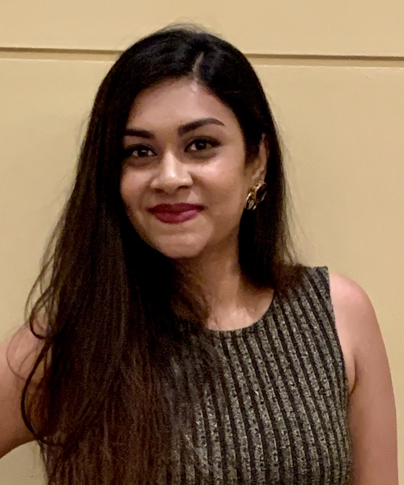

|

|
Bhumi Khanpara
Master's of Science in Computer Science
Florida Institute of Technology, Melbourne FL
August 2019 - Present
GPA : 3.66
|
Program Plan
- Database Systems
- Artificial Intelligence
- Computer Networks
- Analysis of Algorithms
- Full Stack Web Development
- Software Design Methods
- Human Centered Designs
- Information Visualization
- Design Rules-Principles and Practices for Good UI
ACADEMIC PROJECTS
Confernce Management System - Fall 2019
- Designed the database for storing the information of medical conferences.
- Represented an ER diagram and relational schema of the medical conferences. Created SQL DDLs for the schemas using sqlite3.
- Implemented the BCNF on the original schema and decomposed the schemas to make it a lossless join and functional dependency preserving.
- Implemented SQL queries to copy the data from the original schema to decomposed versions. Implemented various SQL queries that involved joining multiple schemas.
- Running a script to determine the time taken to run each queries 1000 times.
Motif Recognition on IVC Artifacts using CNN
- The main objective was to apply CNN on given IVC seal and the model should identify the pictorial part of the seal.
- Generated an input dataset of 5000 images by augmenting 26 unique images.Used the ImagedataGenerator Class of Keras in Python for data augmentation.
- Applied CNN which comprised of one or more convolutional layers followed by one or fully connected layers.Conducted four different experiments on different number of convolutionallayers, dense layers and flatten layers and concluded that
increasing the convolutional layers helped us to extract high level features of ours motifs and help us to achieve high accuracy.
- In the final experiment we created our own custom model which achieved efficient feature extraction and prediction accuracy of around 40% which was earlier only 10% and successfully predicting 4 labels out of 5.
EXPERIENCE
Accenture Services Pvt Ltd
Accociate Software Engineer
February 2013 - February 2014
- Involved in development of various applications for iPhone, iPad and Browsers.
- Played a leading role in the design, implementation and deployment of successful business applications.
- Understanding of the Web service technologies such as SOAP and XML.
- Had been mentoring subordinate colleagues on various iOS skills.
- Achieved rewards in the form of performance points and appreciation mail.
Nimap Infotech Pvt. Ltd
Product Manager
April 2014 - December 2016
- Used Asana Project Management tool to create iOS and Android application, assign team members, assign each team tasks and specify the deadlines.
- Conducting meetings with the marketing team to understand the application’s feedback from potential clients and proposing the necessary changes.
- Involved in the meetings with the business heads and investors to update with the application progress.
B.Nanji Buildcon
Marketing Head
February 2017 - April 2019
- Involved in training and hiring of employees (marketing executives)
- Handling the digital marketing and branding of the company.
- Preparing presentations for the investors and potential buyers.
- Timely customer feedback to improve the marketing strategies.
- Creating the UI for the promotions and marketing offers over social media.
SKILLS
Python, HTML5, CSS, Javascript, Bootstrap, React, Objective C, Salesforce Administrator, GIT, SQLite, MySQL, MongoDB Eclipse, MS Office.
HONORS
- Accenture Stellar Award for outstanding performance in the iOS application development.
- First place in “Inter College Cultural Competition”.
CO-CURRICULAR ACTIVITIES
- Working committee member of technical festival Zephyr 2010.
- Event Head of Salsa in Zephyr 2009.
- Volunteer of publicity in Zephyr 2009.
- Participated in intra college dance and fashion show.
HOBBIES
- Cooking
- Dancing
- Travelling
- Designing Garments
Contact Me